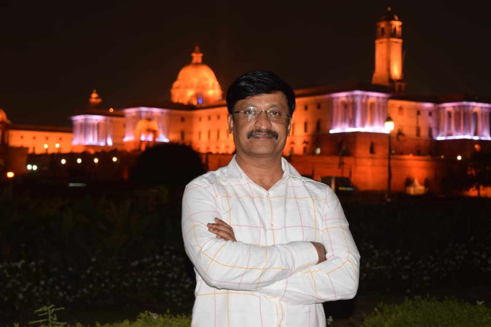

Over two decades of expertise in the execution of large-scale water supply projects across Karnataka.
M/s M N Ramesh Engineers and Contractor are a distinguished Class-I registered infrastructure contracting firm, delivering excellence in water supply and environmental engineering projects for over two decades.
With a legacy rooted in performance, integrity, and technical strength, the firm has emerged as a trusted execution partner for large-scale public infrastructure across Karnataka. We are performance-driven, specializing in the execution of complex, high-value water infrastructure projects. Our approach integrates technical expertise, advanced construction practices, and strong project governance to deliver outcomes that meet global quality benchmarks.
Years of Experience
To deliver high-quality, reliable, and sustainable infrastructure solutions that enhance communities and support long-term development.
To be a leading infrastructure company in Karnataka, setting benchmarks in quality, innovation, and sustainable development.
The principles that guide our projects and partnerships.
Upholding transparency and ethical practices.
Delivering superior standards in construction.
Completing projects on time and within budget.
Continuously improving through advanced methods.
Promoting environmentally conscious practices.
We specialize in comprehensive water infrastructure projects for both urban and rural sectors.
Building efficient systems for the purification and supply of potable water to large populations.
Design and execution of high-capacity water storage tanks tailored to community and municipal needs.
Laying and commissioning of pipelines including HDPE, DI, and MS to support large-scale networks.
Designing and constructing sewage treatment systems for compliant wastewater management.
Specialized in constructing intake structures for efficient water drawing and distribution.
End-to-end project execution in the public sector with technical know-how.
Guided by experience, driven by innovation.

Founder & Chairman
Mr. M N Ramesh, the Founder and The Chairman of the firm, is a respected name in the construction and infrastructure sector with nearly two decades of hands-on experience. He established the company in 2005 as an individual contractor, laying a strong foundation built on integrity, technical expertise, and commitment to quality.
With a deep understanding of civil engineering and execution, Mr. Ramesh has been instrumental in driving the company’s growth from a sole proprietorship to a dynamic partnership firm. His leadership has enabled the organization to successfully undertake and deliver projects across civil and water infrastructure domains, including roads, drainage systems, water supply works, Irrigation works and public utility works.
Managing Director
Mr. Dhanush R, a second-generation entrepreneur, represents the new wave of leadership in the organization. He holds a degree in Civil Engineering from Siddaganga Institute of Technology, Tumakuru, and graduated in the year 2024.
He joined the family business in 2025 with a strong intent to contribute to its growth and modernization. With a fresh perspective and technical foundation, Dhanush is focused on learning the practical aspects of project execution, management, and business development.
Driven and ambitious, he is gradually building his expertise in civil and infrastructure works, aiming to strengthen the company’s future while upholding its core values and legacy.
A glimpse into our large-scale infrastructure projects.
A comprehensive list of our major infrastructure delivery milestones across Karnataka.
WSS to Bailhongal Town
WSS to Tumkur City under AMRUT
IWSS to Tumkur Smart city
WSS to Rammanahalli Town
WSS to Shahapura Town
WSS to Add grants of AMRUT
WSS to Badami & Kerur towns
WSS to BARC at Challakere
WSS to Kolar City under AMRUT
Providing Water Supply scheme to Srirangapatna Town Under UIDSSMT
Providing Water Supply scheme to Mandy city under additional grants AMRUT
Remodeling of Distribution system & Providing HSC in Maddur Town
Providing WSS to Kolar city under AMRUT
Providing WSS to Dabaspet & Hirehalli Industrial Area